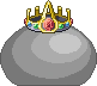
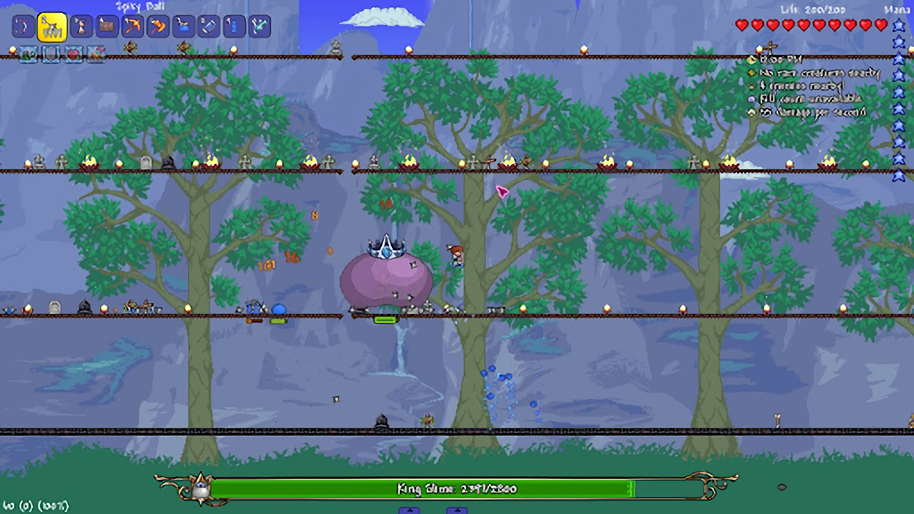

Terraria Eternity Mode Mod King Slime Guide

As someone with over 1500 hours on Terraria, I’ve grown familiar with almost everything in the game. Even still, when I tried to play the infamous Eternity Mode mod, I quickly had to relearn everything I thought I knew. This guide will highlight some helpful tips when preparing to face the mod’s first boss, King Slime. Eternity mode features 18 bosses, with all of them increasing in difficulty and complexity, as well as preparation time. I strongly recommend completing unmodded terraria before attempting Eternity Mode, and this guide is written for those with prior Terraria experience.
Installing Eternity Mode
Install Eternity Mode with the following directions:
- Download Terraria on Steam
- Download Tmodloader to begin installing mods
- Install “Fargo’s Mutant Mod” and “Fargo’s Soul Mod” on Tmodloader
- Enable both and begin playing
Pre-Boss
As you start, you will be very limited in equipment. All of the late game movement options, such as dashing, teleporting and wings will be unavailable. As such, traversing the world will be slow and tedious. As such, your first destination should be the underground. Here, you will have access to 3 crucial movement options: Hermes boots, Cloud in a Bottle, and any grappling hook. Find chests underground to get the boots and cloud in a bottle, and collect 15 gems of any kind to create a hook.
Another problem at the start of the game is the restricted selection of equipment you have available to yourself. Refer to the table below with respect to the class you have chosen to play. Items with an asterisk (*) are obtainable, but it is difficult to do so. Items with an ampersand (&) should be used with other items sharing the symbol.
| Class | Weapon | Armor | Accessories | Buffs/Ammo |
|---|---|---|---|---|
| Any | Platinum/Gold Armor Pumpkin Armor |
Hermes Boots Cloud/Blizzard/Sandstorm/Tsunami in a bottle Band of Regeneration Shark Tooth Necklace Lead Enchantment |
Well Fed Buff Swiftness Buff Ironskin Buff Regeneration Buff Endurance Buff |
|
| Melee | Enchanted Sword * Amazon |
Ancient Shadow Armor * | Feral Claws Strings Counterweights |
|
| Ranged | Minishark Musket Gold/Platinum Bow |
Musket Balls Frostburn Arrows Archery Buff |
||
| Magic | Gem Staves Space Gun & |
Jungle Armor Meteor Armor & |
Magic Cuffs Mana Flower |
|
| Summoning | Slime Staff * |
After you’ve gathered your necessary equipment for the fight, you should construct an arena to fight King Slime in. Craft 2-4 Mini Instabridges and place them on top of each other about 20 tiles apart. Light the arena with torches and place several campfires around the arena for the Cozy Fire buff.
Fighting King Slime

Unlike unmodded Terraria, where King Slime is a pushover who can be easily defeated even if underprepared, Eternity Mode’s King Slime is far more difficult and will likely require multiple attempts for a new player. A theme across all of Eternity Mode is while the difficulty of the bosses is high, they are well telegraphed and their patterns can be memorized. Many strategies that would work in unmodded terraria, such as keeping the boss off screen or circling the boss will not work in Eternity Mode. Focus on learning the attacks and phases of the boss.
Even so, King Slime is the simplest boss in Eternity Mode. He follows the player and teleports to them if they get too far away from him. To avoid being hit by the teleport, try to keep king slime at the edge of your screen at all times. In King Slime’s first phase, he only has one attack: whenever he lands from a jump, bouncing slime balls will spawn directly above the player. To dodge these, simply keep moving at all times. This is why it is necessary to have a large arena to fight King Slime. Under 50% health, King Slime will gain another attack: he will periodically summon walls of slime spikes with wide gaps in between the shots. This attack is fairly simple to dodge on its own, but can be tricky when combined with his normal attack of bouncing slime balls.
During the fight, King Slime will also summon Blue Slimes and Spiked Blue Slimes that can be quite deadly to the player thanks to Eternity Mode’s global increase in damage and monster AI changes. If you have a large enough arena, they should not be a problem as you can continue to move away from King Slime and leave the minions behind. One very important aspect of the fight to be aware of is enraged King Slime. If you are above King Slime for 15 seconds or longer, King Slime will turn red and become enraged. During this phase, King Slime will move much quicker, shoot additional shotguns of slime spikes, and increase the speed of all of its attacks. King Slime ends this phase once the player returns to its elevation. As such, it is important to use your movement options sparingly as to not accidentally enrage the boss.
As a general game plan against the boss: Keep moving and keep King Slime at the edge of your screen. Walk along a long platform, and align yourself with the slime spike walls as they appear while not going above the boss for an extended period. Do this correctly and you should beat your first Eternity Mode boss, with many challenging bosses awaiting throughout the rest of the game.